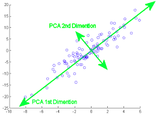

Principal Component Analysis¶
Up until now we studied many algorithms and techniques in all these data is the most important aspect, but in some cases a data with lot’s of feature can be harmful for our model and decrease it’s peformance as our model will be learning and evaluating a lot of feature that does not give any kind of information.To treat such cases we use Dimensionality Reduction methods.PCA(Principal Component Analysis) is one of the techniques to do so.
Introduction¶
(PCA) is one of the oldest and most widely used. Its idea is simple—reduce the dimensionality of a dataset, while preserving as much ‘variability’ (i.e. statistical information) as possible.This means that ‘preserving as much variability as possible’ translates into finding new variables that are linear functions of those in the original dataset, that successively maximize variance and that are uncorrelated with each other.

More variablity translates to the more information thus in we are reducing the dimension by creating new ones that has maximum information possible from the real dataset.We take the projection of the all the point onto our new dimension the take those values for making our model.
Finding The Dimensions¶
In this we will find the dimension of maximum variance in a dataset so the number of dimensions gets reduced and it can be used making the model.
Let us assume a random unit vector say vector \(\vec{V}\) assuming it as our vector of maximum variance.As, we have said that \(\vec{v}\) is a unit vector,
\(\therefore V^{T}V=1\)
To find the projection of Data Vector say \(\vec{X_i}\) on \(\vec{V}\) we will take the dot product of them.
\(\vec{X_i}.\vec{V}\)
Which is equal to-
\(|\vec{X_i}|.|\vec{V}|.cos(\theta)\)
Where,
\(|\vec{X_i}|\) is the magnitude of \(X_i\)
\(|\vec{V}|\) is the magnitude of \(V\) and,
\(\theta\) is the angle between them.
For Now we are only need the direction of \(\vec{V}\) thus, dividing above equation by magnitude of \(\vec{V}\)-
\(\large{\dfrac{\vec{X_i}.\vec{V}}{|\vec{V}|}=|\vec{X_i}|.cos(\theta)}\)
Now,As We know that we have to maximise the variance of the data along the direction of our component.Assuming there are n such data points->
\(\sigma^2=\dfrac{1}{n-1}\times\sum_{i=0}^n(X_i-\bar{X})^2\)
Here \(\bar{X}\) is the mean of all the data points.
We know that with pre-processing of the data we can bring the mean of the data to 0 it will help us in the calculations.So, Assuming \(\bar{X}=0\).
\(\therefore \sigma^2=\frac{1}{n-1}\times\sum_{i=0}^n X_i^2\)
As we all know X_i is a data point containing value of many features in it in a vector form thus \(X_i^2\) acn be written as \(X_i^TX_i\) Therefore new equation will be-
\(\therefore \sigma^2=\frac{1}{n-1}\times\sum_{i=0}^n X_i^TX_i\)
As now we have got the equation of the variance of the data now we need to maximise it in the direction on the \(\vec{V}\),Which means to take the projection of X on V which is the dot product of X and V.
\(\frac{1}{n-1}\times\sum_{i=0}^n(X_i.\vec{V})^T.(X_i.\vec{V}) ----- Maximise\)
As \(\frac{1}{n-1}\) is constant we can ignore it and we can use matrix representation of X to simplify the things.
\((X\vec{V})^T.(X\vec{V}) ----- Maximise\)
So,we have to maximise the above equation but as discussed above we took \(\vec{V}\) as a unit vector and determined that \(V^{T}V=1\)
\(\therefore\) maxmise\((X.\vec{V})^T.(X.\vec{V})\) Given the condition \(V^{T}V=1\).
To maximise or minimise a equation with a condition given is called constrained optimization for which we take help of lagarange multiplier to read and learn about lagrange multiplier you can refer to the following link - https://en.wikipedia.org/wiki/Lagrange_multiplier or refer to these series of videos for more indepth understanding and application it - https://shorturl.at/dmqsE
\(\therefore\large{\frac{\partial}{\partial V}(XV)^T.(XV)-\lambda\times\frac{\partial}{\partial v}(V^TV-1)=0}\)
It can be also written as-
\(\large{\dfrac{\partial}{\partial V}(V^TX^TXV-\lambda\times V^TV + \lambda)=0}------1\)
Let’s diffrentiate the the above two term with respect to V.
For the first term \((V^TX^TXV)\) it can be written as \(V^TAV\) where \(A=XX^T\) we have already seen the diffrentiation of the term like this before. i.e. \((A+A^T)V\)
\(\therefore \frac{\partial}{\partial V}(V^TX^TXV)=(X^TX+(X^TX)^T)\)
\(= (X^TX +X^TX)V\)
\(= 2\times X^TXV\)
Now for the second term \(V^TV\) we have also seen the diffrentiation of this kind before
\(\therefore \frac{\partial}{\partial v} \lambda\times (V^TV)=\lambda\times 2V\)
Putting the values from above two equation in the \(1\) equation:-
\(2\times X^TXV-2\times\lambda\times V=0\)
\(X^TXV=\lambda\times V\)
we earlier stated that \(X^TX=A\) putting this in the equation.
\(A\vec{V}=\lambda\times \vec{V}\)
Above equation os similar to that of Eigen vectors where \(A\) corresponds to the transformation matrix,\(\vec{V}\) is the eigen vector and the \(\lambda\) corresponds to the Eigen value.
You can read about the eigen vector and values from here - https://en.wikipedia.org/wiki/Eigenvalues_and_eigenvectors
Conclusion¶
Eventually we were trying to find the \(\vec{V}\) for maximum variance and by conclusion derived above, we can say that if we have data \(X\) and \(\bar{X}=0\) i.e. mean of the data is zero, Then the direction of the maximum variance will be its eigen vectors and length of variance will be the eigen value.
A transformation can have multiple eigen vector but the Maximum variance will be along the eiegen vaector having highest value and direction having second highest variance will be alomg eigen vector with second highest eigen value and so on.
Thus, we can choose the number of dimension we want in our data after performing the dimensionality reduction by PCA with taking that number of eigen vectors.This will reduce the dimension as well as preserve most of the information(variance) of the orignal data.
You can refer to the following link for the coding implimentation of PCA - https://scikit-learn.org/stable/auto_examples/decomposition/plot_pca_iris.html
Further Readings¶
https://en.wikipedia.org/wiki/Eigenvalues_and_eigenvectors
https://scikit-learn.org/stable/auto_examples/decomposition/plot_pca_iris.html